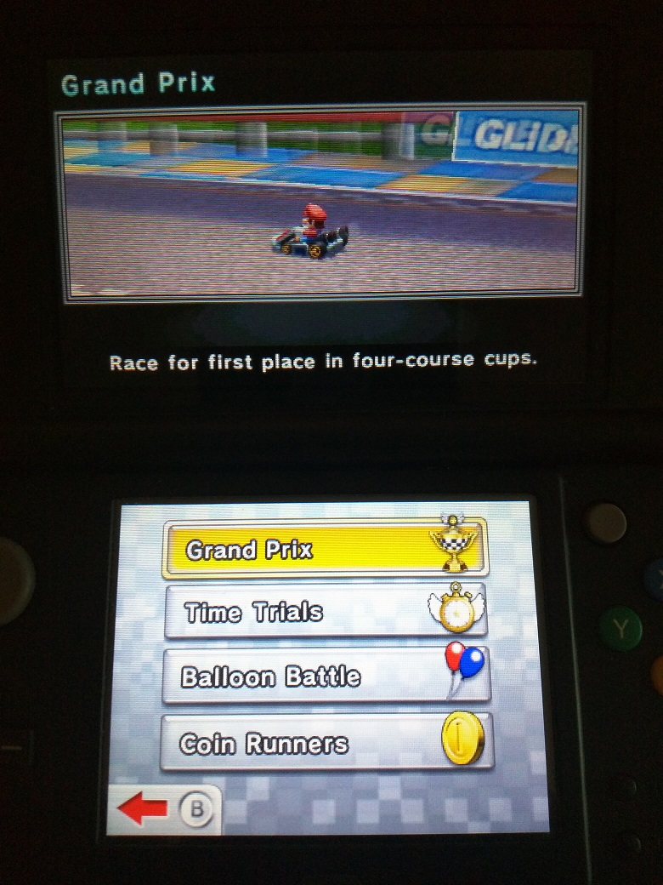
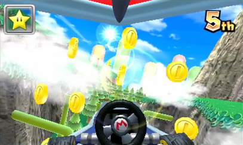
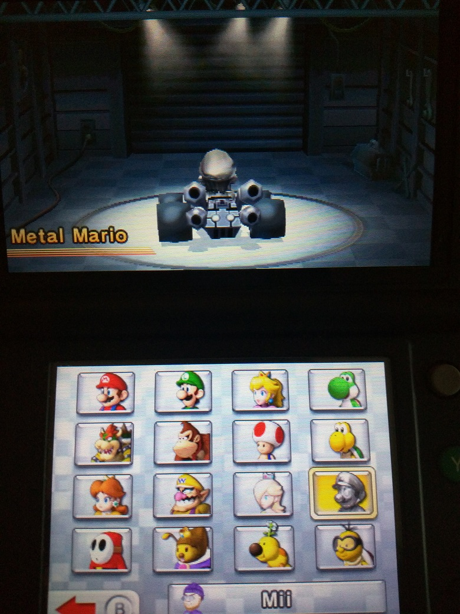
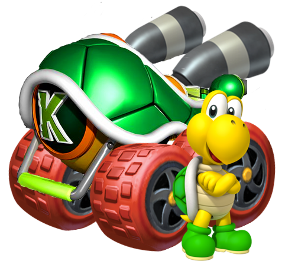

In that link above, I listed off things that annoyed me about 2011's Mario Kart 7, the seventh in the series and on the 3DS. For some background, I was familiar with all of the games preceding this when I first tried the game out and a huge fan of Mario Kart DS and Mario Kart Wii, which you will see will put a lot of my criticisms into context. Now let's do something a little different, touching on those original points and more here in 2019.
First what made my younger self fly into a rant in the first place: Single player verses mode is missing. Aka, you create a game of Mario kart with whatever rules allowed, picking the courses either indefinitely or after a set limit against cpus with or without some human players like a custom grand prix mode. This was introduced in MK:DS. (MK: Grand Prix did have a quick play mode but that was for single races). This mode was invaluable then and still is now for many I’m sure because playing through grand prix all of the time got grating, more so since here you rely on a coin gathering system, more later, to unlock items. You could also control the cpus and motor size, setting cpus to ‘hard’ while being on only 50cc for example and the items from normal to frantic or shells only, etc.
Mario Kart 7 did not omit this without some ‘explanation’. It is a well known fact that the game was rushed out and secondly perhaps Nintendo assumed the online play would make up for it. The online was not bad, giving credit where it is due but it is not a replacement and it makes the game lack for content when the two games preceding MK7 had these features. On a personal level it ruined a lot of replay value once you were sick of grand prix and at the same not in in the mood for online antics. Thankfully lessons were learned and it returned for Mario Kart 8.
What of Battle Mode? It is here in single player somehow but with only a few stages. Honeybee Hive has some interesting 'warps' but is overall a maze like drag. Sherbet Rink is huge and open and simply on ice and that is it. Wuhu Town is for hunting players down and a change of scenery so that is something. Retro stages are okay. The GBA Battle Course 1 is SNES style and flat with wall dividers. Big Donut got gliders added but is essentially a circle as title suggests. DS Palm Shore was enjoyable in it’s original game but here is a lot vibes a lot differently due to different physics and I didn't enjoy it as much.
Now secondly: coin system and grinding. Coins are a familiar thing for Mario Kart games, debuting in the influential but superannuated Super Mario Kart on SNES. There they increased your top speed, being an item gained or picked up on the road (or rather driven over since they lied flat on the ground like suspicious yellow puddles).Simply bumping into another racer made you lose some and having zero meant touching players spun you out. Super Circuit on GBA being similar worked about the same but was also an outlier as Mario Kart 64 was only the second game and eliminated it completely. (Other modes in other games still had them however.) Here it returns and the coins are for speed again so without it you are slower than normal and you lose them by getting hit by items, carrying ONLY ten per race. There is another very special function however, they unlock car parts and it takes a LOT to do this, in fact five thousand for the last unlockable. It makes Double Dash’s ‘all cup circuit’ look like a cake walk!
Collect them all!
While there are guides and short cuts to get coins quickly it is still an extra step and it means a lot of time in grand prix races and online just to unlock simple things. I had personally completed all cups with gold and had decent (but not expert of course) VR and still hadn’t collected enough coins. You cannot control having a maximum of ten at every race and extra you gather do not count. There is some solace in that what you get at the end of the journey is not a doozy so there’s that, but something else could have worked better. Understandably their reasoning is that players don’t want to go through grand prix races in every engine class and instead would unlock parts naturally by playing normally. This would also, whether intentionally or not, lower the skill gate allowing players to get unlocks even if they aren’t able to beat the upper engine class cups. One issue, the characters ARE actually unlocked by winning cups so why did they have to create new criteria for the kart parts? Overall the coin limit is too low and/or the threshold too high.
Moving on to the third point, something not so objectively bad but still worth noting: The item system was intentionally toned down if we are comparing to MK:Wii, the previous game. MK:Wii could get wild with the twelve players but there were options from ‘front running’ (snagging first place and holding on for dear life. MK7 actually uses the phrase in game to describe the same thing, neat.) or ‘sandbagging’ (gimping on purpose for powerful items) and anything else. 7 Does have less players meaning for a less frantic time but also some new items, if only they weren’t lackluster and tied very oddly to position.

Not a power up..
To explain, a new item is a fire flower. You shoot them rapidly for a short time and players hit will spin and lose coins making it very spammable. Another item is the tanooki tail which can attack and protect you from behind at least. There really aren’t any stand outs aside from the blue shell traveling on the ground to ram others aside on way to first place and the lucky seven which grants you all of the items circling your cart to use. In the lower positions often you will feel like you are hardly getting what you need to catch up which can be annoying and prevent comebacks. (Of course computer players will never have that issue.)
Let us say you have some friends. Here comes our fourth point: Local multiplayer, due to that rushed release thing, is actually a cut and paste job of the online mode. For example you have to ‘vote’ on the course you and the local player are about to play on and while you can choose the course you only do four races per session. Like MK:DS someone can play without a game cart and they’ll use the Shy Guy in a generic kart.
Some problems I would blame on lack of time, others laziness but this fifth point is simply inexplicable: They chose to nerf the touch screen map. In MK:DS they chose to make use of the lower touch screen to show a map of the course in real time with all of the hazards and players and items showing. You could actually play a whole round using only that screen, who as a kid didn’t try that? Here there is a small but significant change, hazards do not appear on the screen only general terrain and items. If a blooper inks the screen, hope you aren’t dealing with stage hazards like bullet bills on the Airship stage or falling rocks.Hmm, falling rocks? Not many of those are they, but often on Rock Rock Mountain the camera takes a moment too long to pan upwards when you’re on the last stretch with the rocks. Why? Our sixth point: The camera is kind of not great. Rosalina’s course also has some angles that could be better. Now there is a first person view, a fun little thing even if for its uniqueness, but that shouldn’t be the only way around this. (And it cuts off other parts of your vision too so there’s that.)
They managed to fill the bottom screen, but at what cost?
Seven: The character roster or just characters in general. What? No intro for this point? Funny I always thought that even among those who love this game, the roster would be the one thing they dislike where as it never bothered me as badly. That does not mean I'm nkot acknowledging that is is a complete step down from MK:Wii and has some questionable options. Lakitu is a driver, complete with his animations being the same as the normal lakitu and I wonder who wanted that. He is a frequent sight in spin off games but not playable. Waluigi is gone yet his stage is here, utterly disrespectful and I don’t even like his character that much. Honey Queen is distinctly with the Galaxy games and not a major part, yet got a slot. Wiggler is a semi common enemy but not really but I supposed he got to play tennis once in Mario Power Tennis and that was good enough. Also kind of like the Waluigi thing, this game features Maple Treeway with Wiggler’s giant relatives I guess. Shy Guy is like a less popular Koopa, a mook who has their fans. Diddy is missing and King Boo and Birdo and Bowser Jr and Toadette (especially ironic for her because she debuted in a Mario Kart) but we do have a metallic clone of Mario, something of an underdog choice. Lastly there is a Mii because like Wii games 3DS games must have Miis.
Koopa's here. It's alright.
Here is another thing. For this game the weight classes were complected out of necessity I guess for the move towards creating a kart out of parts with stats that add up to become and overall load out. There is Feather, Light, Medium, Cruiser, Heavy. Visually however there are just the three light medium heavy body frames like normal. Highly subjective, but I really didn’t think they needed to distinguish the weight so closely since there are already the stats both hidden and visible of the vehicles to worry about. This expands to a bigger problem really with the customization feeling sloppy and doing absolutely nothing to dissipate the constant discussion of top tier kart load outs dominating. I sound old, but I miss when it was as simple as choosing a character + kart.
Back on a positive note, ‘rival’ system actually did an interesting revert to Super Mario Kart. In Mario Kart games there are always rivals, computer characters that will typically place second and third behind you assuming you are first and assuming nothing super crazy happens to them. Here the rival is predetermined on who you are to add some character to it in a quirky way. Mario can rival Metal Mario, Bowser, and Peach. Okay. Bowser in turn has Mario, Rosalina, and Luigi. Peach will have Lakitu and Donkey Kong, what did they do to her?? Honey Queen has Koopa and Metal Mario, again what is the connection?
The eight point and possibly my most divisive: The underwater and gliding sections don’t had much other than aesthetics. Understandably they are the games killer feature, I get it, and something that does liven up some courses. Here is my issue: for the underwater bits you are just driving with moon physics for a moment. Karts have special stats for underwater handling but the game doesn't tell you this.. The gliding sections involving straight lines mostly and altitude control somewhat, but at the cost of being very vulnerable while in that state. Pits or a long time consuming fall are often at the bottom of gliding sections. To rub in a little salt, ‘cannons’ from returning retro courses are removed in favor of gliding sections so too bad if you used those to ‘shock dodge’.
Let’s move beyond the scope of that original Tumblr rant. The game looks great visually coming from the other portable titles, this applies to the characters with hair flowing in the wind or the courses that look stunning and very neat in 3D. The entire retro course catalog is solid even down to including SNES rainbow road. Music is well done too. Unlike Mario Kart 8 the music is still synth based I believe so you don't get any remixes for retro tracks but for the better to me. For the new courses they do some show some imagination and they include some check point based tracks with a start and end point instead of a loop. I like and hate these at the same time and they are both based on Wii Sports which was an odd inclusion but done much better than Mario Kart 8 would. They were trying some different settings than, racetrack, desert, jungle, ice like typical, Shy Guy Bazaar while themed Arabian for some reason and having a horrible end gliding section is something different than the usual desert like track. Music Park has a real theme that affects the course at times. Piranha Plant Slide and Neo Bowser City are both exciting romps at 150cc if your kart has tight drifting and sometimes a cool challenge if it does not. Bowser Castle is also nice here with short cuts and gliding and underwater parts that aren’t eye rolling, if kind of easy for it. DK Jungle is nice as well but easy if your drifting is okay. I would compare it to Dino Park in Double Dash. Rainbow Road was often regarded by some as the best one yet with cool moon theming is very appropriate and they did not go overboard with the gliding parts. At least it is better than Mario Kart 8’s version!
Other tracks come and go like the yawn fest Toad Circut, this games equivalent to MK:DS’s Circuit 8 in that they are both bland introductory tracks. Mario Circuit is also a bit lackluster being mostly outside with the only interesting part being that you drive in Peach’s Castle. Peach Gardens on DS did that thing much better. Rock Rock Mountain does justifiably use gliders compared to other tracks but the ending portion of the track can truly mess you up do to the camera. Cheep Cheep Lagoon simularly shows off the water parts if briefly but isn’t much aside from that. I won’t go track by track but its a mixed bag for the new courses.

How fitting.... Source: T-3000 on Deviantart here
Conclusions: In 2014 even with the ranting above I was willing to give this game a six or seven out of ten. Do I still feel that way now? Actually yes, while a playable title over all I still find it the worse modern Mario Kart entry that I quickly moved on from outside of absolute boredom. With the lack of content, questionable design decisions, a kart customization that didn’t captivate me, stripped down game modes, and an overall soullessness in parts, I find it’s critical response overrated. Yes it was the top seller but so was the system it was on and it wasn't like there was much alternative. Mario Karts are one per system so it gets one go, take it or leave it. (Until Mario Kart 8 happened.) Plus the online really was nice and the streetpass I didn't talk about much was done okay. Lastly, it's pretty and people like good looking games. Being the worse modern game does that make it ‘bad’ or the worst in the series. In fact there are things MK7 does right that its successor MK8 did not so there is good to be found in parts. Overall it is worth visiting once if to experience what it has the first time, but for repeated play throughs I would consider other games...
Home